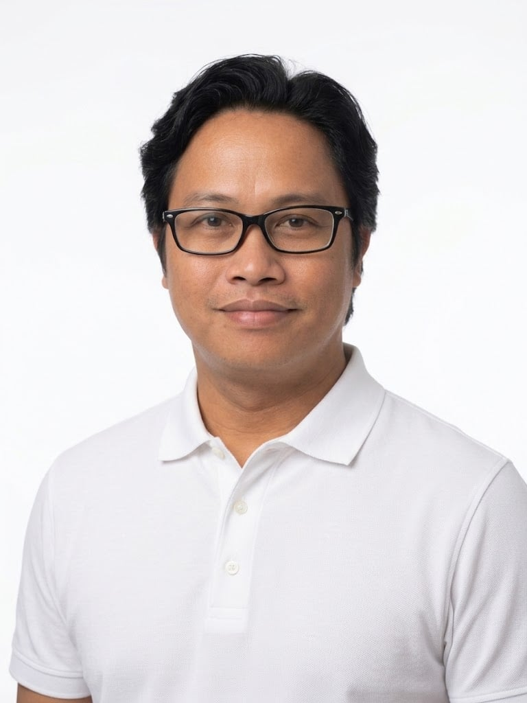
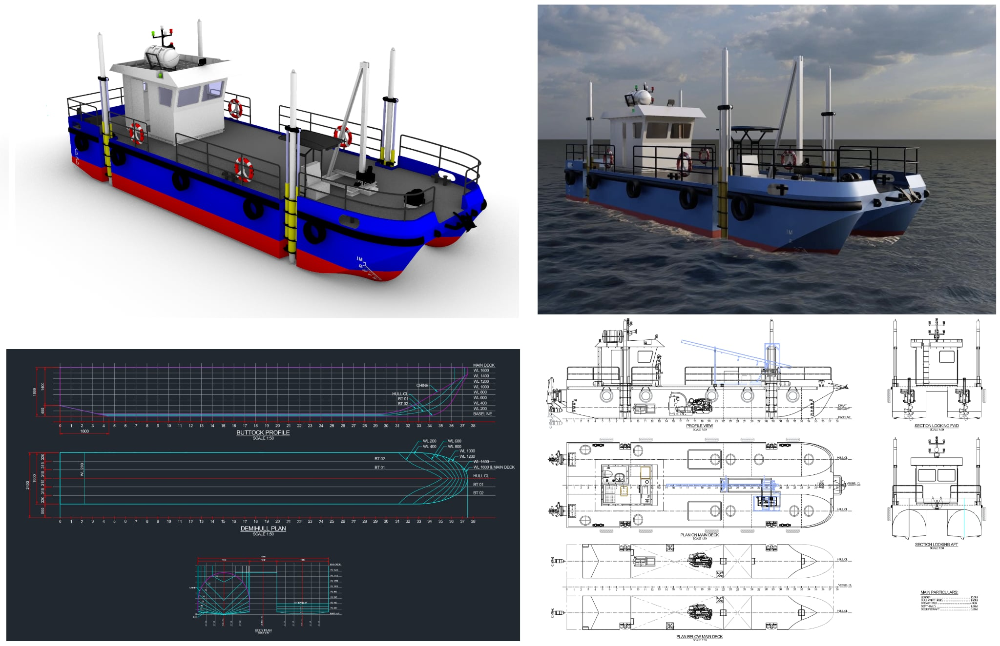
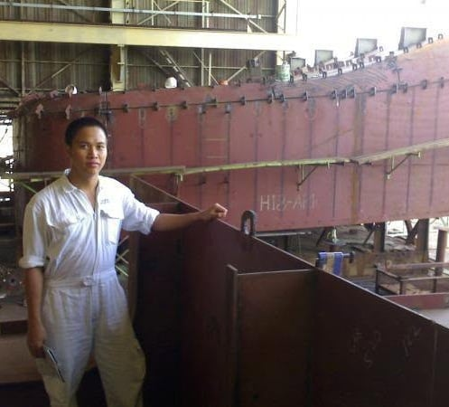
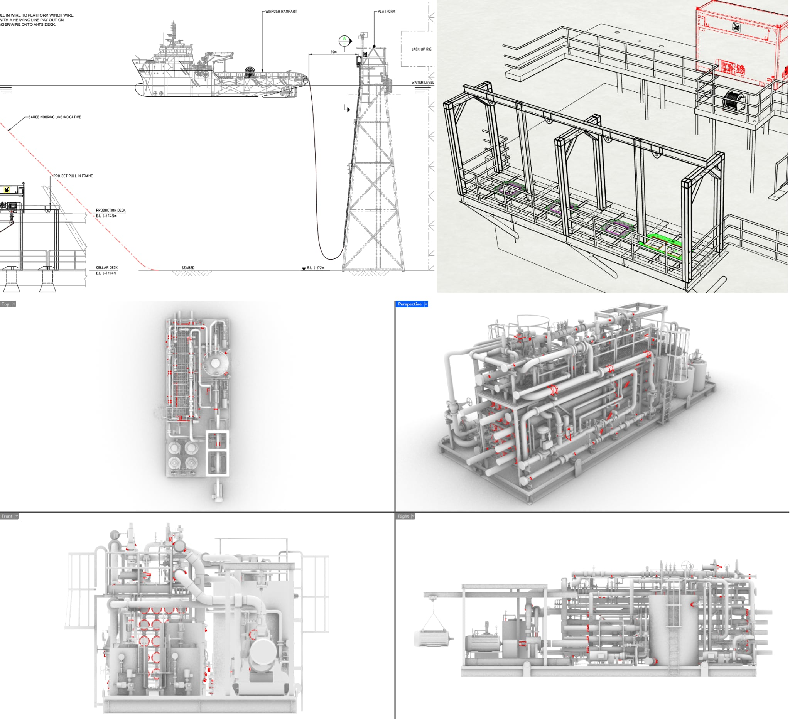

Naval Architecture
Concept and technical vessel design developed around operational requirements, owner specifications, classification requirements and production feasibility.
Registered Naval Architect
Marine / Offshore Structural Designs
Providing specialized naval architecture, marine structural design and engineering support for shipbuilding, offshore and vessel development projects.

About Walter
Walter Unabia Rendon is an experienced Naval Architect and Structural Design Engineer with more than 18 years of professional experience in shipbuilding, offshore structures, marine engineering and technical drafting.
His experience includes structural design and detailing, 3D modeling, fabrication and production drawings, Material Take-Offs (MTO), Bills of Materials (BOM), shop drawings, plate and profile nesting, technical documentation and engineering coordination.
Engineering Services
Concept and technical vessel design developed around operational requirements, owner specifications, classification requirements and production feasibility.
Structural design and engineering support for marine vessels, offshore structures and shipyard development facilities.
Detailed three-dimensional structural models supporting engineering coordination, fabrication and production.
Detailed structural, fabrication, assembly, shop and production drawings prepared for shipyard and construction requirements.
Accurate Material Take-Offs, Bills of Materials, plate & profile requirements and engineering documentation supporting procurement and fabrication.
Design coordination, drawing review, revisions and engineering support throughout project development, fabrication and installation.
Technical Capabilities
Selected Work



Engineering Outputs
Each deliverable gives the next team the information they need to proceed. In naval architecture, the general arrangement and hull model establish the vessel’s configuration. Structural drawings and calculations develop that design and support approval. Production information then guides procurement, fabrication and construction, while as-built drawings record the final result.
| Technical deliverable | How it moves the project forward |
|---|---|
| General Arrangement | Establishes the overall vessel configuration |
| Lines Plan / Hull Model | Provides the basis for hull and structural development |
| Structural Drawings | Defines the vessel’s structural construction |
| Structural Calculations | Demonstrates structural adequacy and supports Class approval |
| 3D Structural Model | Supports detailed engineering, coordination and production |
| Scantling Plans | Defines plate thicknesses and structural members |
| Production Drawings | Allows the shipyard to fabricate components |
| Shop Drawings | Provides fabrication and assembly information |
| Block/Unit Drawings | Enables block and unit construction |
| Plate Development | Allows plates to be fabricated and formed |
| Nesting Plans | Enables CNC cutting and improves material utilization |
| MTO / BOM | Supports material procurement and planning |
| Welding Details | Guides fabrication and welding activities |
| Erection Drawings | Allows blocks to be positioned and assembled |
| As-Built Drawings | Records the final constructed condition |
Structural design drawings, 3D models and calculations establish the structure. Steel framing plans, connection details, material specifications and MTO/BOM support coordination and procurement. Fabrication drawings, welding details and module/block drawings guide construction. Lifting and transportation details and installation drawings support delivery to site, followed by as-built documentation.
Project Types
Career
Marine CADCAM Pte Ltd · Singapore
BGP Inc., CNPC · Dubai / Ras Al Khaimah, UAE
Techwise Offshore Consultancy & Techwise Offshore Group · Singapore
Longitude Engineering · Singapore
FJR Engineering · Drydocks World Dubai · Ad Hoc Marine Design · Marine CADCAM · Keppel / Nakilat-Keppel
Why Work With Me
18+ years across marine, offshore and shipbuilding environments.
Drawings and engineering developed with fabrication and construction requirements in mind.
Professional experience supporting engineering projects across multiple countries.
From structural modeling to detailed drawings, documentation and production support.

Engineering Partnership
Let's discuss your vessel, offshore or shipbuilding engineering requirements.
Discuss Your Project ↗Contact
Walter Unabia Rendon
Naval Architect & Marine Structural Design Engineer
Cebu, Philippines